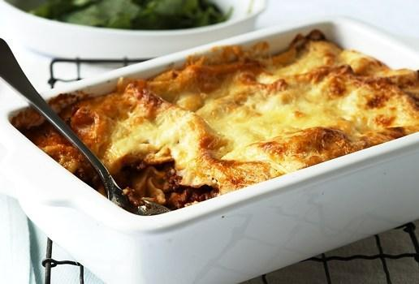

Lasagne

Description
A pasta and beef mince dish in which ingredients are layered over eachother and baked to perfection.
Ingredients
- 2 tsp oil
- 500 g lean mince beef
- 1 medium onion, finely chopped
- 2 crushed garlic
- 1 tsp dried oregano
- 400 g can diced tomatoes
- 1 tbsp tomato paste
- 0.5 cup water
- 1 pkt MAGGI Tasty Cheese Sauce Mix
- 0.5 cup milk
- 0.5 cup water, extra
- 250 g ricotta cheese
- 200 g instant lasagne sheets
- 1.5 cups grated cheddar cheese
Recipe
- preheat oven to 180°c/160°c fan forced. grease a 30cm x 20cm lasagne dish.
- heat oil in a frying pan over high heat; add mince, cook until browned;
drain excess oil. add onion and garlic, cook 3 minutes. add oregano, tomatoes,
tomato paste and water. bring to the boil, simmer, uncovered, for 30 minutes.
- meanwhile, combine MAGGI tasty cheese sauce mix, milk and extra water in a
small saucepan. bring to the boil, stirring, simmer 2 minutes. remove from
the heat and stir in ricotta cheese.
- spread half the meat and tomato sauce over the prepared dish. cover with lasagne sheets.
spread with half the cheese sauce and another layer of lasagne sheets. repeat all
layers finishing with cheese sauce, then sprinkle with grated cheese.
- bake 45-50 minutes or until golden brown. stand 10 minutes before serving.
Return home